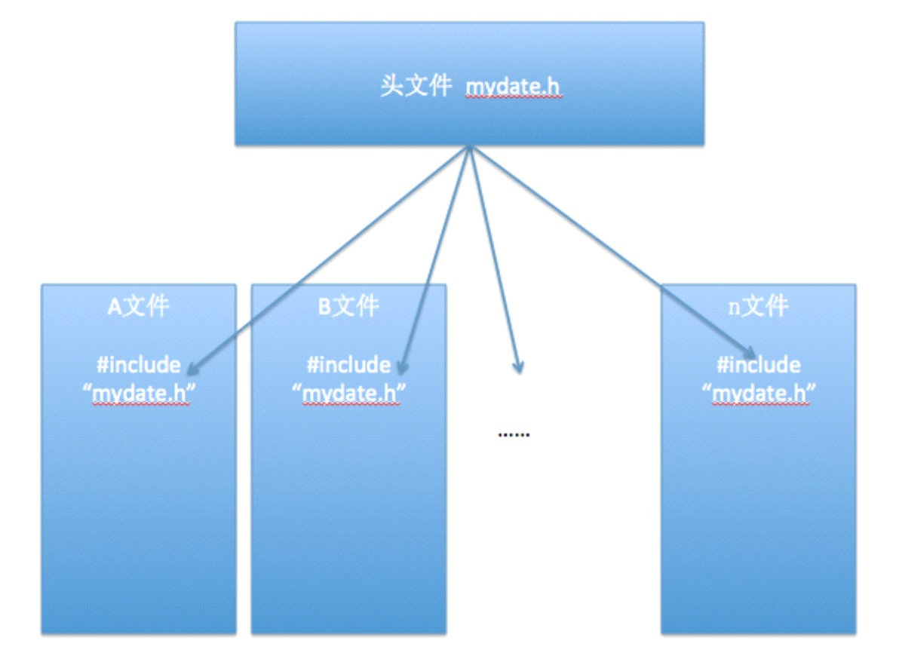
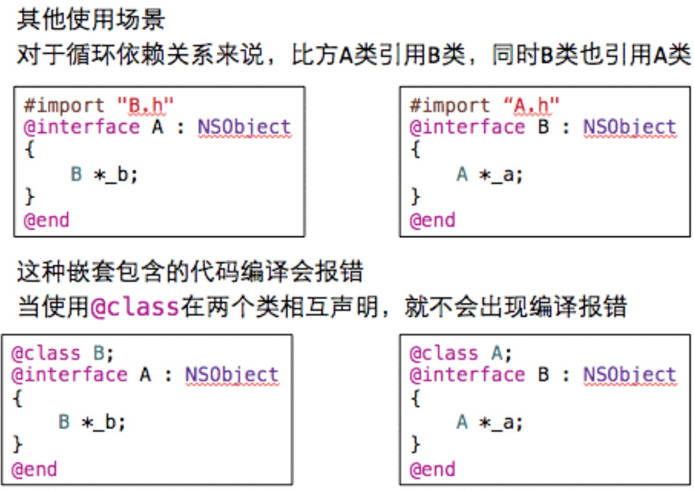

-
OC基础第一天
- 0.1. 【掌握】内存管理的基本概念及范围
- 0.2. 【理解】内管管理的原理及分类
- 0.3. 【掌握】手动内存管理快速入门
- 0.4. 【理解】内存管理的原则
- 0.5. 【掌握】单个对象内存管理（野指针）
- 0.6. 【掌握】单个对象内存管理
- 0.7. 【掌握】多个对象内存管理（野指针）
- 0.8. 【掌握】多个对象内存管理
- 0.9. 【掌握】set方法内存管理
- 0.10. 【掌握】@property参数（一）
- 0.11. 【掌握】@property参数（二）
- 0.12. 【理解】应用：电商App练习
- 0.13. 【理解】@class的使用
- 0.14. 【理解】循环retain问题
- 0.15. 【了解】NSString类的内存管理问题
- 0.16. 【掌握】autorelease基本使用
- 0.17. 【了解】内容总结
- Published with GitBook
13、【理解】@class的使用
- 场景 
1.@class的使用
- 作用
- 可以简单地引用一个类
- 简单使用
- @class Dog; //类的引入
- 仅仅是告诉编译器:Dog是一个类;并不会包含Dog这个类的所有内容
具体使用
- 在.h文件中使用@class引用一个类
- 在.m文件中使用#import包含这个类的.h文件
如下面代码:
A.h文件 #import "B.h" @interface A : NSObject { B *b; } @end- 为了简单起见:A类是引用类,B类是被引用类,这里先不考虑A类的实现文件。
通常引用一个类有两种办法:
- 一种是通过#import方式引入;
- 另一种是通过@class引入;
这两种的方式的区别在于:
1）#import方式会包含被引用类的所有信息,包括被引用类的变量和方法;@class方式只是告诉编译器在 A.h文件中 B *b只是类的声明,具体这个类里有什么信息,这里不需要知道,等实现文件中真正要用到时,才会真正去查看B类中信息;
2）使用@class方式由于只需要知道被引用类(B类)的名称就可以了,而在实现类由于要用到被引用类中的实体变量和方法,所以需要使用#import来包含被引用类的头文件;
3）通过上面2点也很容易知道在编译效率上,如果有上百个头文件都#import了同一个文件,或者这些文件依次被#improt(A->B, B->C,C->D...),一旦最开始的头文件稍有改动,后面引用到这个文件的所有类 都需要重新编译一遍,这样的效率也是可想而知的.而相对来讲,使用@class方式就不会出现这种问题了;
所以:我们实际开发中尽量在.h头文件中使用@class
- 4）对于循环依赖关系来说,比方A类引用B类,同时B类也引用A类,B类的代码: 
- 当程序运行时,编译会报错,当使用@class在两个类相互声明,就不会出现编译报错。


- 把其中的一个头文件中的import换成@class

- 面试题：#import和@class的区别。
- 作用上的区别
- import会包含引用类的所有信息(内容),包括引用类的变量和方法 @class仅仅是告诉编译器有这么一个类,具体这个类里有什么信息,完全不知道。
- 效率上的区别
- 如果有上百个头文件都#import了同一个文件,或者这些文件依次被#import,那么一旦最开始的头文件稍有改动,后面引用到这个文件的所有类都需要重新编译一遍,编译效率非常低相对来讲,使用@class方式就不会出现这种问题了。
- 作用上的区别